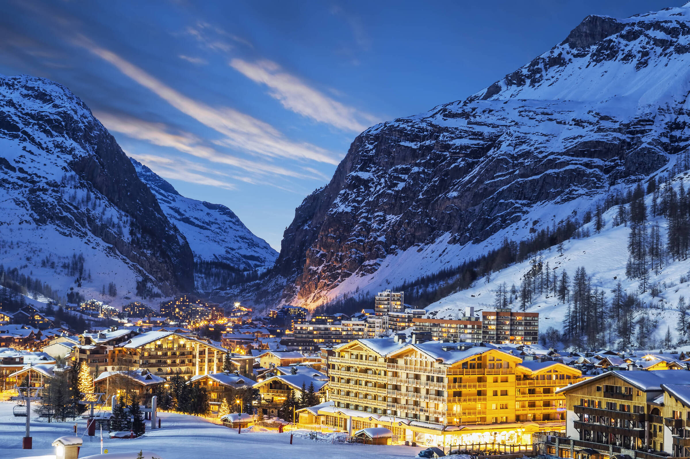

ЗИМСКА ПОНУДА

АЛПСКИ СКИ ЦЕНТРИ
Шамони, Франција
05.01 - 11.01
Откријте ја зимската магија на француските Алпи и уживајте во незаборавно скијање опкружени со снежни планини. Очекуваат ве прекрасни скијачки патеки, шармантни алпски гратчиња и спектакуларни панорамски погледи. Совршена понуда за љубителите на скијањето, природата и планинските авантури.
ЗИМСКА АВАНТУРА
Едно од најпознатите француски алпски гратчиња, сместено во подножјето на Мон Блан и опкружено со спектакуларни планински предели. Шамони е познато по својата традиционална алпска архитектура, живописниот центар, пешачките улици, локалните ресторани и продавници, како и по прекрасната зимска атмосфера.
Еден од најпознатите и највисоки врвови на Алпите, кој доминира над целиот регион околу Шамони. Посетителите можат да уживаат во прекрасните панорамски погледи кон снежниот врв и околните планини, со можност за фотографирање и уживање во величествениот алпски пејзаж.
Популарна зимска дестинација со уредени алпски патеки и одлични можности за скијање и сноуборд. Опкружени со високи снежни врвови, посетителите можат да уживаат во зимските спортови, додека оние кои не скијаат можат да поминат време во снежната природа и планинските објекти.
Една од најимпресивните планински атракции во околината на Шамони, до која се пристигнува со панорамска жичара. Од високите планински станици се отвораат спектакуларни погледи кон Мон Блан, околните врвови и француските Алпи, создавајќи незаборавно искуство за сите посетители.
Состанок со групата на аеродромот во Скопје, 2 часа пред предвиденото време на полетување. Следува лет до Франција и организиран трансфер до Шамони. По пристигнувањето следуваат сместување во хотел и време за одмор и освежување по патувањето. Во попладневните часови е предвидена прва прошетка низ центарот на Шамони, со запознавање со главната пешачка зона, локалните продавници и ресторани. Вечерта е слободна за вечера и индивидуални активности. Ноќевање во хотел.
Појадок во хотелот и организирана прошетка низ Шамони. Разгледување на централниот дел на гратчето и слободно време за фотографирање, кафе и шопинг во локалните продавници. Во попладневните часови е предвидено слободно време за одмор или индивидуални зимски активности. Вечерта е слободна за вечера и уживање во планинската атмосфера. Ноќевање во хотел.
Појадок во хотелот и организирано заминување кон планинската област со поглед кон Мон Блан и околните врвови. Предвидено е време за фотографирање и уживање во снежниот пејзаж. Во зависност од временските услови, достапноста и работата на планинските објекти, можна е посета на повисока планинска точка со панорамски поглед. Следува слободно време за ручек, а потоа враќање во Шамони. Вечерта е слободна за одмор и индивидуални активности. Ноќевање во хотел.
Појадок и организирано заминување кон скијачката област. Денот е посветен на зимски активности, со можност за скијање и сноуборд на уредените патеки во околината на Шамони. За туристите кои не скијаат е предвидено слободно време за зимска прошетка, фотографирање и престој во планинските објекти. Во текот на денот е предвидено време за ручек и одмор. Во попладневните часови следува враќање во Шамони. Ноќевање во хотел.
Појадок во хотелот и организирано заминување кон жичарата за Aiguille du Midi, доколку временските услови и работата на жичарата дозволуваат. Следува искачување кон високите планински предели и уживање во панорамските погледи кон Мон Блан и француските Алпи. Предвидено е време за фотографирање и разгледување на планинската околина. По враќањето во Шамони следува слободно време за ручек и одмор. Вечерта е слободна за вечера и индивидуални активности. Ноќевање во хотел.
Појадок во хотелот и слободно претпладне во Шамони. Можност за дополнително скијање или сноуборд, зимска прошетка или индивидуално разгледување на гратчето. Следува слободно време за ручек, кафе и шопинг. Во попладневните часови е предвидено време за последно уживање во планинската атмосфера и фотографирање. Вечерта е слободна за последна вечера во Шамони. Ноќевање во хотел.
Појадок во хотелот и одјавување согласно предвиденото време. Следува кратка утринска прошетка низ Шамони и слободно време за последно кафе, фотографии или купување сувенири. Потоа следува организиран трансфер до аеродромот согласно распоредот на летот. По завршувањето на аеродромските процедури следува лет за враќање и завршување на патувањето.